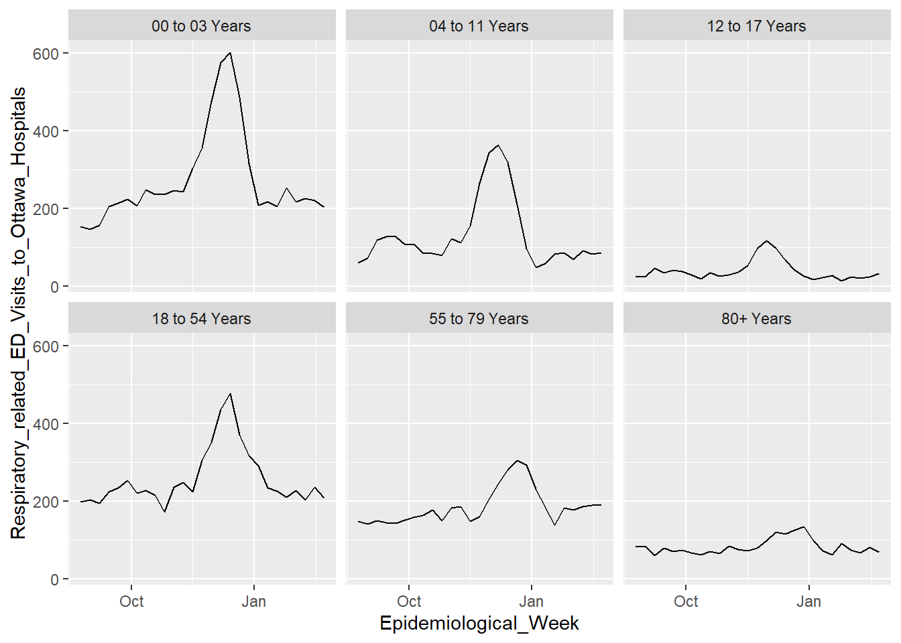
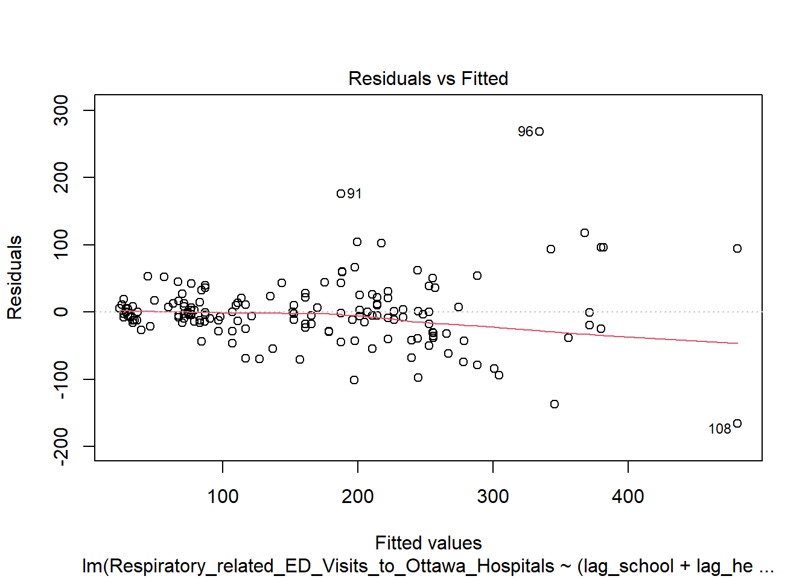

library(tidyverse)
library(lubridate)
library(here)
ed <- read.csv(here("data", "All_causes_and_respiratory_related_emergency.csv"), header = TRUE)
outbreaks <- read.csv(here("data", "Respiratory_Outbreaks_(excluding_COVID-19).csv"), header = TRUE)
# head(ed)
# head(outbreaks)
# Align weeks
ed <- ed |>
mutate(Epidemiological_Week = ymd(Epidemiological_Week))
outbreaks <- outbreaks |>
mutate(Start_of_the_Week = ymd(Start_of_the_Week))
merged <- ed |>
left_join(outbreaks, by = c("Epidemiological_Week" = "Start_of_the_Week"))Respiratory Illness Patterns in Ottawa
I. Data Sources
This analysis uses two open datasets published by Ottawa Public Health.
Dataset A: Emergency department visits
Columns are:
Epidemiological_WeekAge_CategoryAll_Causes_ED_Visits_to_Ottawa_HospitalsRespiratory_related_ED_Visits_to_Ottawa_Hospitals% respiratory
This dataset measures healthcare burden and contains weekly counts of emergency department (ED) visits.
Dataset B: Respiratory Outbreaks (Excluding COVID)
Columns are:
Week_NumberStart_of_the_WeekNumber_of_Respiratory_Outbreaks- Historical baselines (previous 3-season average, pre-COVID average)
This dataset measures disease activity across institutional settings such as schools, healthcare facilities, and congregate care environments.
Together, these datasets allow us to explore the relationship:
\[ \text{Outbreaks} \rightarrow \text{Community transmission} \rightarrow \text{ED visits} \]
II. Research questions
This project investigates the following questions:
- Do increases in respiratory outbreaks predict increases in emergency visits?
- Are certain age groups more sensitive to outbreaks than others?
- Is the current season above or below historical baseline?
- Do outbreaks in specific settings (schools, healthcare, congregate care) predict increases in respiratory-related ED visits for different age groups?
III. Clean and merge datasets
Outbreak variables were renamed for readability and aggregated into a total outbreak measure:
merged <- merged |>
rename(
outbreaks_school =
Number_of_Respiratory_Outbreaks__Excl__COVID_19__in_Schools__Camps__and_Licensed_Child_Care,
outbreaks_health =
Number_of_Respiratory_Outbreaks__Excl__COVID_19__in_Healthcare_Institutions,
outbreaks_congregate =
Number_of_Respiratory_Outbreaks__Excl__COVID_19__in_Congregate_Care,
prev_avg_school =
Previous_3_Season_Average_of_Respiratory_Outbreaks__Excl__COVID_19__in_Schools__Camps__and_Child_Care,
prev_avg_health =
Previous_3_Season_Average_of_Respiratory_Outbreaks__Excl__COVID_19__in_Healthcare_Institutions,
prev_avg_congregate =
Previous_3_Season_Average_of_Respiratory_Outbreaks__Excl__COVID_19__in_Congregate_Care,
pre_covid_school =
Prior_to_COVID_19_3_Season_Average_of_Respiratory_Outbreaks_in_Schools__Camps__and_Child_Care,
pre_covid_health =
Prior_to_COVID_19_3_Season_Average_of_Respiratory_Outbreaks_in_Healthcare_Institutions,
pre_covid_congregate =
Prior_to_COVID_19_3_Season_Average_of_Respiratory_Outbreaks_in_Congregate_Care
)
merged <- merged |>
mutate(total_outbreaks =
outbreaks_school + outbreaks_health + outbreaks_congregate)
merged <- merged |>
mutate(total_outbreaks_prev =
prev_avg_school + prev_avg_health + prev_avg_congregate)
merged <- merged |>
mutate(total_outbreaks_pre_covid =
pre_covid_school + pre_covid_health + pre_covid_congregate)
#head(merged)IV. Exploratory analysis
Seasonal patterns by age group
ggplot(merged,
aes(Epidemiological_Week,
Respiratory_related_ED_Visits_to_Ottawa_Hospitals)) +
geom_line() +
facet_wrap(~Age_Category)
This visualization shows clear seasonal peaks and substantial differences in baseline respiratory ED visits across age groups.
V. Lagged Outbreak Effect
Respiratory outbreaks typically precede increases in hospital visits. To account for this, outbreak counts were lagged by one week.
# Keeping lags separate
merged <- merged |>
arrange(Epidemiological_Week) |>
mutate(
lag_school = lag(outbreaks_school, 1),
lag_health = lag(outbreaks_health, 1),
lag_congregate = lag(outbreaks_congregate, 1),
lag_total = lag(total_outbreaks, 1)
)
analysis_df <- merged |>
drop_na(lag_school, lag_health, lag_congregate, lag_total)VI. Regression Analysis
Model 1: No age interaction
- Which outbreak type predicts ED visits overall?
- This model assumes outbreaks affect all age groups equally.
model1 <- lm(Respiratory_related_ED_Visits_to_Ottawa_Hospitals ~
lag_school + lag_health + lag_congregate + Age_Category,
data = analysis_df)
#summary(model1)Model 2: Interaction between outbreaks and age
Allows the effect of outbreaks to differ across age groups
Is age affected by original outbreak location?
model2 <- lm(
Respiratory_related_ED_Visits_to_Ottawa_Hospitals ~
(lag_school + lag_health + lag_congregate) * Age_Category,
data = analysis_df
)
#summary(model2)Model 1 vs. Model 2 comparison
H_0: Interaction terms do not improve the model
H_a: Interaction terms significantly improve fit
anova(model1, model2)Analysis of Variance Table
Model 1: Respiratory_related_ED_Visits_to_Ottawa_Hospitals ~ lag_school +
lag_health + lag_congregate + Age_Category
Model 2: Respiratory_related_ED_Visits_to_Ottawa_Hospitals ~ (lag_school +
lag_health + lag_congregate) * Age_Category
Res.Df RSS Df Sum of Sq F Pr(>F)
1 152 505636
2 137 384107 15 121529 2.8897 0.0005604 ***
---
Signif. codes: 0 '***' 0.001 '**' 0.01 '*' 0.05 '.' 0.1 ' ' 1Result:
p-value < 0.00056, reject the null at 5% level. Allowing outbreak effects to vary by age significantly improves the model’s ability to explain ED visits. This suggests the relationship between respiratory outbreaks and emergency department visits varies significantly across age groups.
VII. Aggregated Outbreak Model
Because outbreak types were strongly correlated, an aggregated outbreak variable was also evaluated.
model_age_sensitivity <- lm(
Respiratory_related_ED_Visits_to_Ottawa_Hospitals ~
lag_total * Age_Category,
data = analysis_df
)
anova(model_age_sensitivity)Analysis of Variance Table
Response: Respiratory_related_ED_Visits_to_Ottawa_Hospitals
Df Sum Sq Mean Sq F value Pr(>F)
lag_total 1 288845 288845 96.245 < 2.2e-16 ***
Age_Category 5 1205278 241056 80.321 < 2.2e-16 ***
lag_total:Age_Category 5 76109 15222 5.072 0.0002533 ***
Residuals 149 447171 3001
---
Signif. codes: 0 '***' 0.001 '**' 0.01 '*' 0.05 '.' 0.1 ' ' 1Result:
Total outbreaks: p < 0.001
Age category: p < 0.001
Interaction: p = 0.00025
This indicates that:
outbreak intensity predicts ED visits
age strongly influences baseline visit levels
age groups respond differently to increases in outbreaks
Comparing aggregated and disaggregated models:
anova(model_age_sensitivity, model2)Analysis of Variance Table
Model 1: Respiratory_related_ED_Visits_to_Ottawa_Hospitals ~ lag_total *
Age_Category
Model 2: Respiratory_related_ED_Visits_to_Ottawa_Hospitals ~ (lag_school +
lag_health + lag_congregate) * Age_Category
Res.Df RSS Df Sum of Sq F Pr(>F)
1 149 447171
2 137 384107 12 63064 1.8744 0.04262 *
---
Signif. codes: 0 '***' 0.001 '**' 0.01 '*' 0.05 '.' 0.1 ' ' 1The detailed outbreak model provided only a modest improvement in fit (p = 0.042), suggesting that total outbreak burden is a reasonable summary predictor.
# Slopes differe = interaction justified
ggplot(analysis_df,
aes(lag_congregate,
Respiratory_related_ED_Visits_to_Ottawa_Hospitals,
colour = Age_Category)) +
geom_point() +
geom_smooth(method = "lm", se = FALSE)
idk
Does separating outbreaks improve prediction?
model_total <- lm( Respiratory_related_ED_Visits_to_Ottawa_Hospitals ~ total_outbreaks + Age_Category, data = analysis_df )
anova(model_total, model2)Analysis of Variance Table
Model 1: Respiratory_related_ED_Visits_to_Ottawa_Hospitals ~ total_outbreaks +
Age_Category
Model 2: Respiratory_related_ED_Visits_to_Ottawa_Hospitals ~ (lag_school +
lag_health + lag_congregate) * Age_Category
Res.Df RSS Df Sum of Sq F Pr(>F)
1 154 456154
2 137 384107 17 72047 1.5116 0.09908 .
---
Signif. codes: 0 '***' 0.001 '**' 0.01 '*' 0.05 '.' 0.1 ' ' 1model_separate <- lm(
Respiratory_related_ED_Visits_to_Ottawa_Hospitals ~ (lag_school + lag_health + lag_congregate) * Age_Category,
data = analysis_df
)
model_total <- lm(
Respiratory_related_ED_Visits_to_Ottawa_Hospitals ~ lag_total * Age_Category,
data = analysis_df
)
anova(model_total, model_separate)Analysis of Variance Table
Model 1: Respiratory_related_ED_Visits_to_Ottawa_Hospitals ~ lag_total *
Age_Category
Model 2: Respiratory_related_ED_Visits_to_Ottawa_Hospitals ~ (lag_school +
lag_health + lag_congregate) * Age_Category
Res.Df RSS Df Sum of Sq F Pr(>F)
1 149 447171
2 137 384107 12 63064 1.8744 0.04262 *
---
Signif. codes: 0 '***' 0.001 '**' 0.01 '*' 0.05 '.' 0.1 ' ' 1Testing: Does breaking outbreaks into school/health/congregate + interactions improve prediction compared to using only total outbreaks? (H_0: Simple model is sufficient vs. H_a: The complex model explains more variance).
If p-value small, the detailed outbreak categories provide significantly better predictive power.
- With a p-value of 0.099, we fail to reject the null hypothesis at the 5% level. At a 10% level we would reject the null, so the difference is marginally significant.
An F-test comparing the two models suggested that incorporating outbreak setting and age interactions provided a marginal improvement in model fit (p = 0.099), though not statistically significant at the 5% level.
A linear model including total respiratory outbreaks and age category explained a substantial proportion of variation in respiratory-related emergency visits. Both outbreak activity and age were highly significant predictors (p < 0.001). The interaction between age and outbreak activity was also significant (p = 0.0003), indicating that increases in outbreaks affected age groups differently. Models that separated outbreaks by setting (school, healthcare, congregate) provided only a modest improvement in fit (p = 0.042), suggesting that total outbreak burden is a sufficient summary measure for predicting emergency department utilization.
VIII. Model diagnostics
Check model fit (Model 2)
#par(mfrow = c(2,2))
plot(model2, which=1)
LOESS line is fairly flat, suggesting the linearity assumption is not badly violated
A slight curvature indicates the relationship may not be perfectly linear
Points standing out with outliers: 91, 96, 108
plot(model2, which=2)
Most points fall along the line, normality mostly fine
Deviation in the tails, especially upper, driven by the same outliers (91, 96, 108)
Normality assumption is not really perfect.
library(car)
vif(model_age_sensitivity) GVIF Df GVIF^(1/(2*Df))
lag_total 6.1131 1 2.472468
Age_Category 231.2755 5 1.723507
lag_total:Age_Category 619.5614 5 1.901991vif(model2) GVIF Df GVIF^(1/(2*Df))
lag_school 6.052491 1 2.460181
lag_health 7.134600 1 2.671067
lag_congregate 7.096479 1 2.663922
Age_Category 261.944950 5 1.745103
lag_school:Age_Category 7.284619 5 1.219665
lag_health:Age_Category 1409.732352 5 2.064970
lag_congregate:Age_Category 27.145506 5 1.391137The linear model fit is overall acceptable but not flawless, the biggest issues being a handful of influential outliers, slight nonlinearity and mild heteroscedasticity (variance of errors terms not constant across all levels of independent variables)
# good plot
library(ggplot2)
ggplot(analysis_df,
aes(x = lag_total,
y = Respiratory_related_ED_Visits_to_Ottawa_Hospitals,
color = Age_Category)) +
geom_point() +
geom_smooth(method = "lm", se = FALSE)
IX. Comparison with historical baselines
Outbreak counts were compared to historical averages to identify anomalous seasons.
merged <- merged |>
mutate(outbreak_anomaly =
total_outbreaks -
total_outbreaks_prev)This allows current disease activity to be interpreted relative to pre-COVID seasonal patterns.
X. Findings
Respiratory outbreaks significantly predict increases in emergency department visits.
Age is the strongest determinant of baseline ED utilization.
The effect of outbreaks is not uniform across age groups; children aged 0–3 showed the strongest sensitivity.
Separating outbreaks by institutional setting provides limited additional predictive value compared to using total outbreak counts.
# library(plotly)
# p <- ggplot(merged,
# aes(Epidemiological_Week,
# Respiratory_related_ED_Visits_to_Ottawa_Hospitals,
# colour = Age_Category)) +
# geom_line()
# ggplotly(p)
library(plotly)
library(ggplot2)
library(dplyr)
# Prepare merged data for plotting
plot_df <- merged |>
mutate(
total_outbreaks_scaled = total_outbreaks * 20, # rescale to match ED visits
baseline_scaled = total_outbreaks_prev * 20 # previous 3-season average
)
# Base ggplot
p <- ggplot(plot_df, aes(x = Epidemiological_Week)) +
# Respiratory ED visits by age group
geom_line(aes(y = Respiratory_related_ED_Visits_to_Ottawa_Hospitals,
color = Age_Category),
size = 1) +
# Total outbreaks (rescaled)
geom_line(aes(y = total_outbreaks_scaled),
color = "blue", linetype = "dashed", size = 1,
alpha = 0.7) +
# Historical baseline (ribbon)
geom_ribbon(aes(ymin = 0, ymax = baseline_scaled),
fill = "lightblue", alpha = 0.2) +
labs(
title = "Respiratory ED Visits vs. Institutional Outbreaks in Ottawa",
y = "ED Visits / Outbreaks (scaled)",
x = "Week",
color = "Age Group"
) +
theme_minimal(base_size = 14)
# Make interactive
ggplotly(p, tooltip = c("x", "y", "color"))VIII. Edpidemiological curve
ggplot(merged, aes(Epidemiological_Week)) +
geom_line(aes(y = Respiratory_related_ED_Visits_to_Ottawa_Hospitals),
colour = "red") +
geom_line(aes(y = total_outbreaks * 20),
colour = "blue")
(Multiplying outbreaks by 20 rescales them to match the magnitude of ED visits, allowing both series to be visualized on the same plot.)